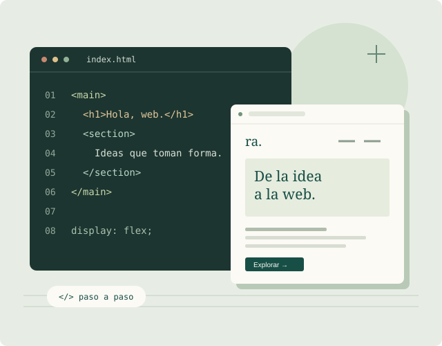

02 / PROYECTOS
Pequeñas prácticas.
Grandes bases.
Un recorrido por los fundamentos del módulo: de la primera estructura HTML a un portafolio responsive.
PROYECTO ACTUAL / 2026
Este portafolio,
pieza por pieza.
Cuatro páginas conectadas, una hoja de estilos y un formulario de demostración. La evaluación final reúne lo aprendido en las primeras tres sesiones.
- HTML5
- CSS3
- JavaScript
- Git

BITÁCORA DE PRÁCTICA
Ejemplos académicos del módulo.
Los siguientes proyectos, fechas y estados son ilustrativos. Representan ejercicios del curso; no se presentan como trabajos reales ni como entregas verificadas.
En pantallas pequeñas, desliza la tabla horizontalmente. Con teclado, enfoca la tabla y utiliza las flechas.
| Nombre del proyecto | Tecnologías utilizadas | Fecha de ejemplo | Estado de ejemplo |
|---|---|---|---|
| 01. Mi primera página semánticaCabecera, contenido y navegación. | HTML5 | Completado | |
| 02. Formulario de inscripciónCampos etiquetados y validación nativa. | HTML5 · CSS3 | Completado | |
| 03. Página adaptable con FlexboxUna composición para distintas pantallas. | HTML5 · CSS3 · Flexbox | En revisión | |
| 04. Portafolio con control de versionesOrganización del código y registro de cambios. | HTML5 · CSS3 · Git/GitHub | En desarrollo |
EL SIGUIENTE PASO
Explora la interacción.
Prueba las validaciones del formulario sin enviar información.